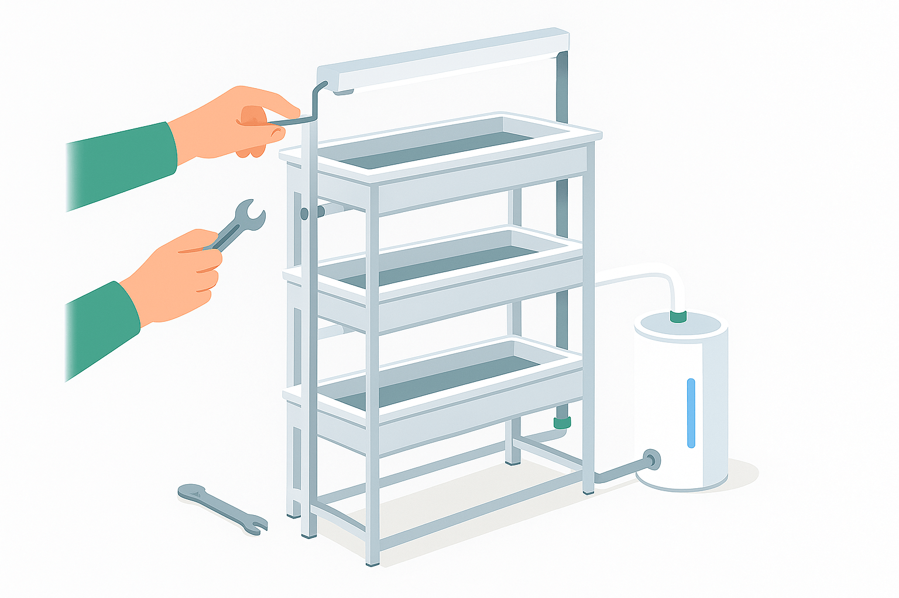
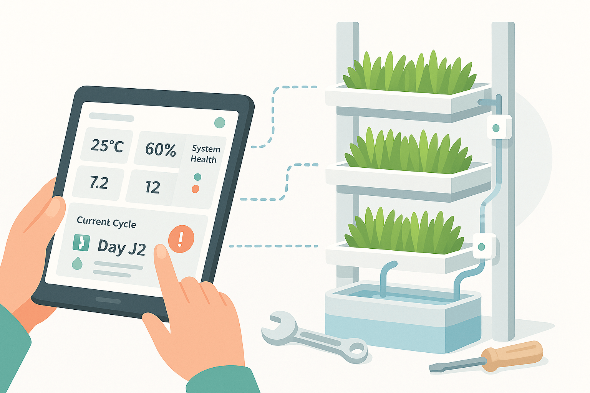
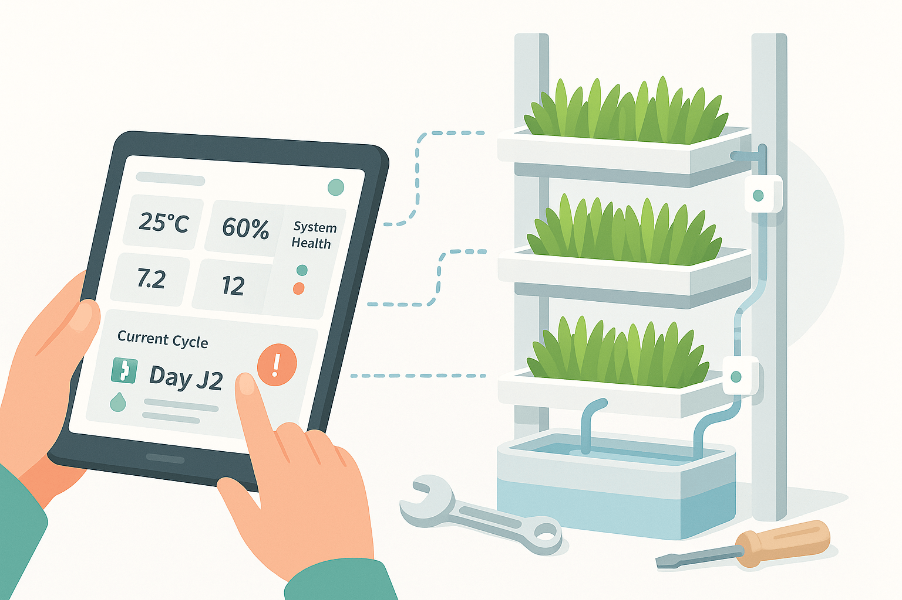
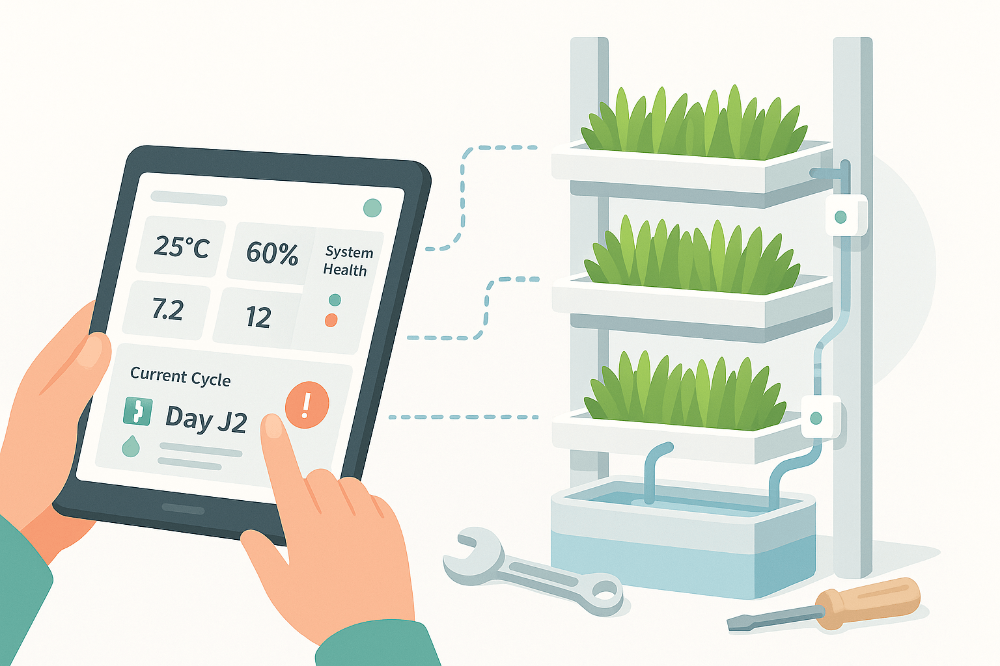

Eau Optimisée
Réduction de 70% de consommation d'eau
Production Régulière
Récoltes planifiées toute l'année
Qualité Contrôlée
Protocole sanitaire HACCP
Simplicité
Interface web Intuitive
Découvrez notre technologie
Voir la démo interactive
Pour qui ?
Éleveurs laitiers
Gestion de l'alimentation des vaches
Fermes d'engraissement
Fourniture de fourrage de qualité
Exploitations maraîchères
Optimisation de la production
Centres de formation
Enseignement de l'agriculture moderne
Comment ça marche ?
1
Installation
2
Planification
3
Suivi
4
Récolte
5
Analyse

 



